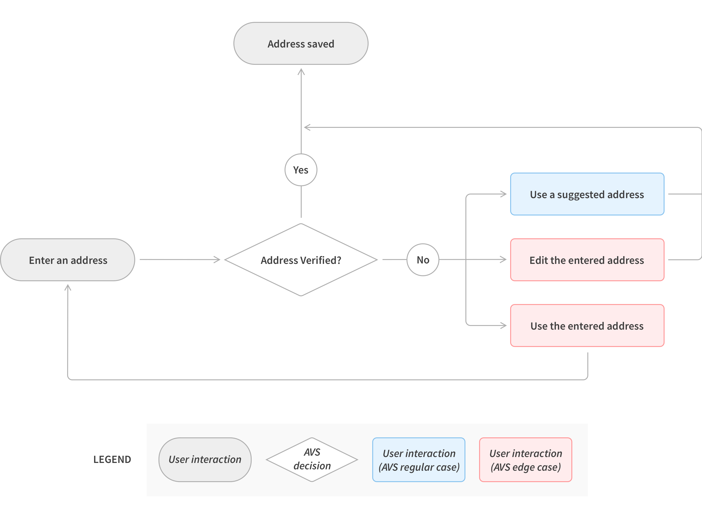

Enabling effective preventive maintenance through IoT
user-centered process · interactive prototype · proof of concept
My role
Product design co-op
Cross-functional team
R&D, Tyler center, facilitiy, the design co-op team
Overview
The moment when you take a sip of your favorite latte, did you know the water in cup is not just a simple chemical compound but the magical ingredient for delivering the unique aroma and beautiful taste? Coffee is 99% water. As the biggest coffee chain in the world, Starbucks has been serving customers beverages with high-quality water by implementing best-in-class water filtration system consistently.

Milestone & opportunity
With the goal of maximizing the system’s uptime to reduce repair costs and customer experience interference, Starbucks has prioritized IoT integration on their water filtration system in core retail stores. The data retrieved from Internet of Things sensors can help to understand the use cases of each alliance in the system and determine if a piece of equipment needs preventive maintenance to achieve fix-before-failure.
In Spring 2019, I had an opportunity to join Starbucks as a product design co-op with 3 other peers from Indiana University. Within 4 months, we delivered a proof of concept solution to help Starbucks achieve their goal of making effective preventive maintenance happen by leveraging solid data profile streamed from IoT. Adopting a user-centered design process, we delivered a set of dashboards to enable each of the subject matter stakeholders to get their job done at the core of delivering a fix-before-failure transformation.

The North Star - heuristics evaluation
There wasn’t additional bandwidth to weave research studies into the timeline to gain customer insights on the current design. Fortunately, as address validation is a well-studied domain, I was able to find the North Star to base my critique on. My main references were Jakob Nielson’s usability heuristics and Baymard’s UX benchmark of 60 major ecommerce sites on designing for address validators.

At a high level, address validator is a type of error message. In general, our intent aligned with Jakob Nielson's principle on designing for error cases. The validator intervenes customers on a relevant timing to provide address suggestions to fix their address entry mistakes. After a heuristics evaluation and discussion with research and content strategy partners, I was able to identify the space to bring the current design to the next level.
Current design discrepancies
1. There’s the solution, but no explanations on the problem. We attempt to nudge customers to continue with a suggested address; however, the message on the validator doesn’t provide much context on the cause of this blocker and corresponding consequences of an invalid address.
2. There’s no visibility of the entered address. It’s hard to catch the discrepancies between entered and suggested addresses, without aligning them together for side-by-side comparison.
3. There’s no options to override the validator. Baymard’s UX benchmark suggests, as there’s no guarantee for AVS to be 100% error-less, it's always helpful to allow customers to override the validator and continue with their entered address. Such a treatment is overlooked on the current design. The “cancel” button will bring back the address entry stage, but the same validator will be triggered again with another “save address” attempt.
4. There’s space to bring the overall design to the next level, such as to fix the repetitive CTAs and visual alignment discrepancy.
Ideation
I initiated lots of critique sessions with my design team and cross-functional partners to capture their feedback during the ideation and iteration. These syncs really helped me to grow as a designer, learning from the team, speaking up for my design decisions, and pushing back as a UX advocate.

Iterations & key design decisions

Caveat
After mapping out the checkout flow for both return and guest customers, a navigation inconsistency issue caught my eyes.

Further iterations

Final solution
Taking all into account, I had another round of design iteration and came up with a solution that got all the stakeholders on board. I proposed to turn the validator from an in-page component to a standalone modal. A modal simplifies the information hierarchy, which really helps to explain the complicated navigation logic between the main and sub checkout flows.

What's next
I delivered a full stack of annotated design specs and handed to the engineering team for development; 6 address validation use cases with 2 customer across responsive web and native apps. As a wrap, I contributed to the VQA session and identified several key front-end discrepancies before rolling out the new design. While this feature is being A/B tested, let’s stay tuned for the results and impact :)